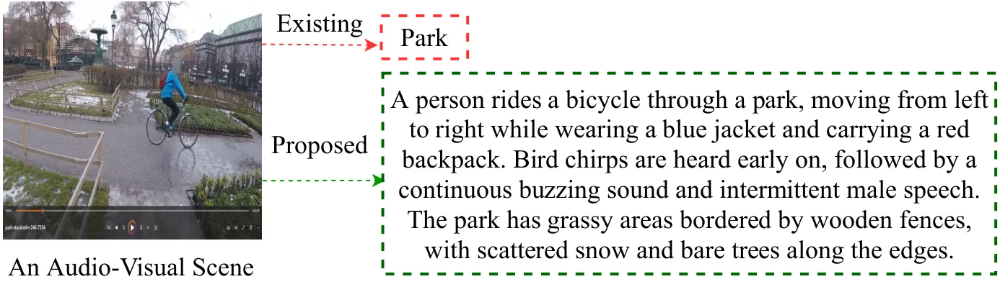
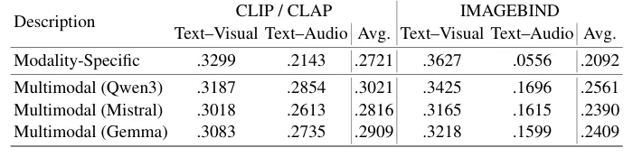
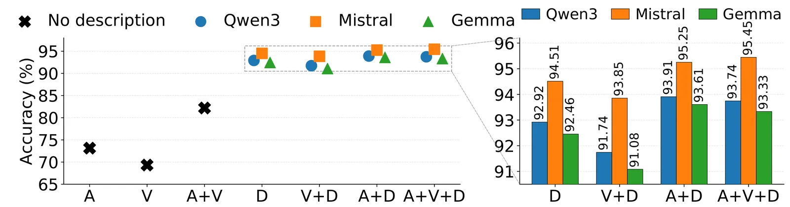

O problema dos rótulos de cena
Datasets de cenas urbanas costumam representar ambientes com etiquetas simples: 'aeroporto', 'parque', 'estação de metrô'. Essas categorias são úteis para classificação, mas omitem praticamente tudo que torna uma cena interessante. Não dizem quais sons estão presentes, o que está visível no ambiente, que atividades acontecem, ou como áudio e vídeo se relacionam.
O dataset TAU Urban Audio-Visual Scenes, criado para benchmarks de classificação de cenas acústicas, captura ambientes urbanos com áudio e vídeo sincronizados. Mas cada gravação é identificada apenas por um rótulo de categoria. Para tarefas como recuperação multimodal, geração de linguagem ou compreensão de cena, essa representação é insuficiente.
Datasets de audio captioning existem: Clotho tem cerca de 5 mil clipes de áudio ambiental com legendas escritas por humanos; AudioCaps tem 46 mil pares áudio-texto extraídos do AudioSet. Mas a anotação manual é cara e não escala. Datasets automáticos maiores, como WavCaps e LAION-Audio-630K, focam em eventos acústicos isolados, não em cenas completas. Datasets audio-visuais como VGG-Sound descrevem eventos associados a fontes sonoras visíveis, mas não capturam o contexto holístico de um ambiente urbano.
A proposta: descrições multimodais geradas por LLMs
Os autores apresentam o AVSD-Scenes, um dataset de 12.291 descrições em linguagem natural de cenas urbanas, geradas automaticamente a partir do TAU Urban Audio-Visual Scenes. A ideia é usar modelos de linguagem especializados para criar descrições ricas que integrem informações de áudio e vídeo, indo além do que cada modalidade captura isoladamente.
O pipeline funciona em três etapas. Primeiro, um modelo de áudio (Qwen2-Audio-7B) gera descrições textuais a partir do áudio da cena. Segundo, um modelo de visão (Qwen2.5-VL-7B) gera descrições a partir dos frames de vídeo. Terceiro, três LLMs diferentes (Qwen3-14B, Mistral-Small-3.2-24B e Gemma-3-27B) recebem as duas descrições e as combinam em uma descrição multimodal unificada.
A motivação é que áudio e vídeo carregam informações complementares. O áudio captura eventos temporais, atividades e sons ambientes que podem não ter fonte visível. O vídeo fornece contexto espacial, objetos, pessoas e pistas sobre possíveis fontes sonoras. Uma descrição que integre ambas as modalidades deveria ser mais informativa que qualquer descrição unimodal.

Como o pipeline de geração funciona
Todos os modelos são carregados com quantização de 4 bits (NormalFloat) e double quantization, usando computação em FP16 para tornar a inferência viável em hardware limitado. O Qwen2-Audio-7B recebe o áudio da cena e gera uma descrição textual focada nos eventos sonoros. O Qwen2.5-VL-7B processa frames do vídeo e descreve o conteúdo visual.
As duas descrições são então passadas para um dos três LLMs de fusão. Cada LLM recebe um prompt pedindo para combinar as informações de áudio e vídeo em uma descrição coerente que capture a cena como um todo. Os autores testam três modelos diferentes para verificar se a escolha do LLM de fusão afeta a qualidade das descrições resultantes.
O dataset final contém três versões de cada descrição multimodal, uma para cada LLM de fusão. Isso permite comparar não só descrições multimodais contra unimodais, mas também avaliar o impacto da arquitetura do modelo de fusão na qualidade final.

Como avaliar descrições multimodais
Os autores usam cinco estratégias de avaliação. Primeiro, similaridade cross-modal: embeddings das descrições são comparados com embeddings de áudio e vídeo usando modelos CLAP e CLIP. A hipótese é que descrições multimodais devem ter alta similaridade com ambas as modalidades, enquanto descrições unimodais devem favorecer apenas sua modalidade de origem.
Segundo, recuperação cross-modal: dado um embedding de texto, o sistema tenta recuperar o áudio ou vídeo correto entre todos os exemplos do dataset. Métricas como Recall@10 e mean Average Precision (mAP@10) medem o desempenho. Terceiro, classificação de cena: um SVM linear é treinado para prever a categoria da cena urbana (parque, aeroporto, etc.) usando apenas embeddings das descrições textuais.
Quarto, avaliação LLM-as-a-judge: o GPT-4o recebe pares de descrições e julga qual é mais detalhada, coerente e informativa. Quinto, avaliação humana subjetiva: anotadores humanos classificam as descrições em uma escala de 1 a 5 nas mesmas dimensões avaliadas pelo LLM.
Essa bateria de testes é importante porque não existe métrica única para qualidade de descrições. Similaridade cross-modal mede alinhamento semântico, mas não garante que a descrição seja útil. Classificação de cena verifica se a descrição preserva informação discriminativa. Avaliação humana captura aspectos qualitativos que métricas automáticas podem perder.
Descrições multimodais capturam mais informação
Os resultados de similaridade cross-modal mostram que descrições multimodais têm alta correlação tanto com áudio quanto com vídeo. Descrições geradas apenas de áudio têm similaridade média de 0.29 com embeddings de áudio e 0.24 com vídeo. Descrições apenas de vídeo têm 0.24 com áudio e 0.28 com vídeo. Já descrições multimodais alcançam 0.27 com áudio e 0.27 com vídeo, equilibrando ambas as modalidades.
Na recuperação cross-modal, descrições multimodais superam descrições unimodais. Para recuperação de áudio, o Recall@10 sobe de 18.8% (descrição de vídeo) e 28.9% (descrição de áudio) para 31.3% com descrições multimodais do Qwen3. Para recuperação de vídeo, o ganho é de 18.5% e 26.9% para 29.9%.
Esses números indicam que as descrições multimodais não apenas combinam informações de ambas as modalidades, mas capturam relações entre elas que não estão presentes nas descrições unimodais. A fusão não é uma simples concatenação: os LLMs conseguem integrar pistas de áudio e vídeo de forma complementar.

Classificação de cena com texto alcança 94.5%
Um resultado surpreendente é que descrições textuais sozinhas alcançam até 94.5% de acurácia na classificação de cenas urbanas. Isso é notável porque o classificador (um SVM linear) recebe apenas embeddings de texto, sem acesso direto a áudio ou vídeo. As descrições preservam informação discriminativa suficiente para separar categorias como 'aeroporto', 'parque' e 'metrô'.
Quando embeddings de áudio, vídeo e descrição multimodal são concatenados, a acurácia sobe para 95.4%. Isso mostra que as descrições não substituem completamente as modalidades originais, mas adicionam informação semântica de alto nível que complementa features de baixo nível extraídas de áudio e vídeo.
Os autores também testam o pipeline sem fornecer o rótulo de cena nas instruções dos modelos. Mesmo sem saber que estão descrevendo um 'parque' ou 'aeroporto', as descrições geradas ainda alcançam 89.7% de acurácia em classificação. Isso sugere que os modelos capturam informação semântica derivada do conteúdo audio-visual, não apenas repetem rótulos fornecidos no prompt.

Avaliação humana e LLM-as-a-judge
Na avaliação LLM-as-a-judge, o GPT-4o prefere descrições multimodais em 73% dos casos quando comparadas a descrições apenas de áudio, e em 68% dos casos contra descrições apenas de vídeo. A avaliação humana subjetiva confirma essa preferência: anotadores humanos atribuem notas mais altas para descrições multimodais em todas as dimensões avaliadas.
Entre os três LLMs de fusão testados, Qwen3-14B e Mistral-Small-3.2-24B produzem descrições ligeiramente preferidas sobre Gemma-3-27B, mas as diferenças são pequenas. Isso sugere que a arquitetura do modelo de fusão tem impacto moderado na qualidade final, desde que o modelo seja suficientemente capaz.
A concordância entre avaliação automática (LLM-as-a-judge) e humana valida o uso de LLMs para avaliação de qualidade em escala. Mas os autores reconhecem que avaliação humana captura nuances que modelos podem perder, especialmente em aspectos como coerência narrativa e naturalidade da linguagem.
O que o dataset não resolve
O AVSD-Scenes cobre apenas cenas urbanas do dataset TAU, que foram gravadas com protocolos padronizados. Isso garante consistência, mas limita a diversidade de ambientes. Cenas rurais, interiores domésticos ou ambientes naturais não estão representados. A generalização para outros domínios não foi testada.
Todas as descrições são geradas automaticamente. Não há descrições de referência escritas por humanos para comparação direta. Isso torna impossível medir a 'correção' absoluta das descrições, apenas sua utilidade em tarefas downstream e sua preferência em avaliações subjetivas.
O pipeline depende de modelos proprietários ou de código aberto específicos. Qwen2-Audio-7B e Qwen2.5-VL-7B são modelos relativamente grandes que exigem quantização para rodar em hardware acessível. A reprodutibilidade do dataset depende da disponibilidade contínua desses modelos.
Finalmente, o paper não explora como as descrições se comportam em tarefas de geração multimodal ou em sistemas de diálogo. A utilidade do dataset para aplicações além de classificação e recuperação ainda precisa ser demonstrada.
Por que isso importa
O AVSD-Scenes mostra que é possível gerar descrições multimodais ricas em escala, usando modelos de linguagem para integrar informações de áudio e vídeo. Isso abre caminho para datasets maiores que representem ambientes complexos em linguagem natural, sem depender de anotação humana custosa.
As descrições geradas preservam informação discriminativa suficiente para classificação de cena, mas adicionam contexto semântico que rótulos categóricos não capturam. Isso é útil para sistemas que precisam raciocinar sobre ambientes, não apenas classificá-los.
A bateria de avaliações proposta (similaridade cross-modal, recuperação, classificação, LLM-as-a-judge, avaliação humana) oferece um framework para medir qualidade de descrições multimodais mesmo sem referências humanas. Isso pode ser aplicado a outros datasets gerados automaticamente.
O código e o dataset serão disponibilizados publicamente, permitindo que outros pesquisadores usem as descrições para treinar modelos de linguagem multimodal, avaliar sistemas de captioning ou explorar representações semânticas de cenas urbanas. O impacto dependerá de quão bem o dataset se integra a pipelines de treinamento existentes e se a comunidade adota as descrições como benchmark.
O que fica
- AVSD-Scenes contém 12.291 descrições multimodais de cenas urbanas geradas por LLMs, combinando informações de áudio e vídeo em texto rico.
- Descrições multimodais alcançam 94.5% de acurácia em classificação de cena usando apenas embeddings de texto, subindo para 95.4% quando combinadas com áudio e vídeo.
- Avaliação cross-modal mostra que descrições multimodais capturam informações complementares de ambas as modalidades, superando descrições unimodais em recuperação.
- Mesmo sem rótulos de cena no prompt, descrições geradas mantêm 89.7% de acurácia, indicando que capturam semântica do conteúdo, não apenas repetem etiquetas.
Paper original: AVSD-Scenes: A Dataset for Audio-Visual Description of Urban Scenes
Comentários
Nenhum comentário ainda. Seja o primeiro.